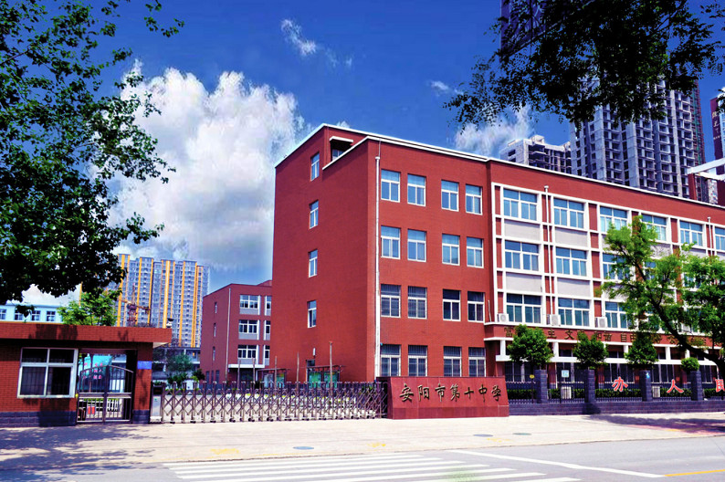
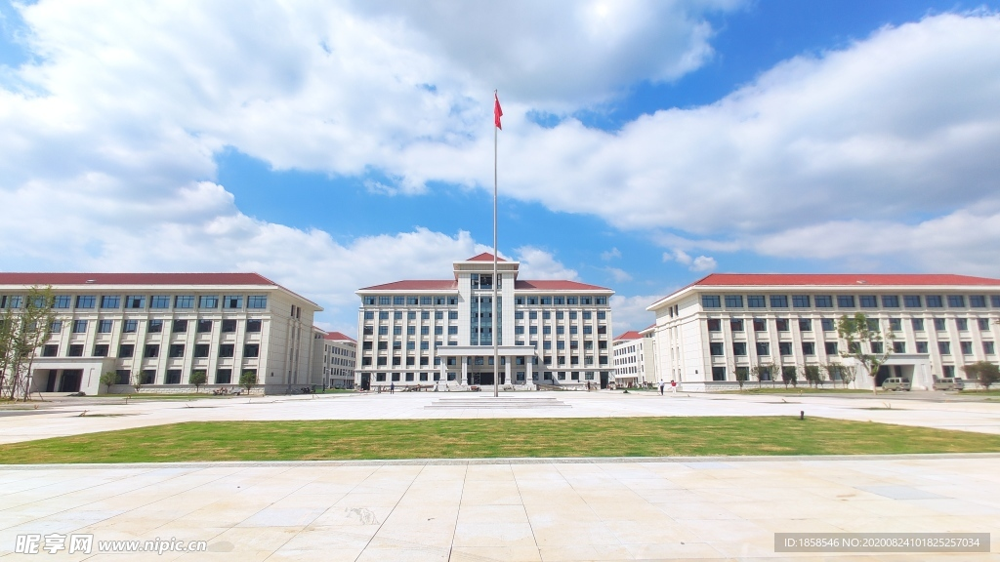
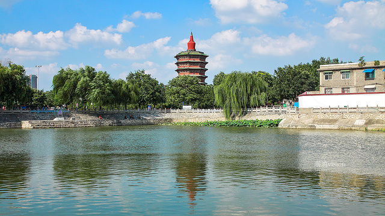

我小学就读于安阳市东工路小学，它离我家非常近，导致我爸妈从小就不接我上下学，小学时候的我比较调皮捣蛋，但是现在回想起来也是一段快乐的时光。
个人简历
我是郭超峰，下面我来向你介绍我的成长经历
成长经历
进入中学，我学习了许多新的知识与技能，也结交了许多非常要好的朋友，比较开心的是我所在的初中与我之前上的小学只有一墙之隔，非常方便， 中学时期，我的成绩在班级里名列前茅，可惜的是中考发挥失利，没有考上全市最好的高中学府。
到了高中时期，一切对我来说都十分新颖，高中离我家有着快十五公里的距离，于是我不得不成为一名住宿生，刚开始，我对这一生活方式会感到不适应， 但之后就慢慢习惯这种每周往返家中一次的生活了，高中给我的感觉是我在这一阶段变得更加成熟，不再像之前那样比较内向害羞了。
高中的三年是我感觉学生时代过的最快的时间，仿佛一眨眼就要面对高考...... 高考的成绩对我来说不算特别优秀，但也还说得过去，并且我也为自己是一名中南大学子而感到自豪！
现在我是一名中南大信息工程学院的学生，在之后的时间里，我将把我们学院的的优势充分发挥，在之后的日常生活中学以致用，成为一名对国家和社会有用的人才。
我的家乡 —— 安阳
我的家乡位于中国河南省北部，是一座历史悠久的文化名城。这里不仅是我出生和成长的地方，也是中华文明的重要发源地之一。
历史底蕴深厚
安阳最著名的当属殷墟遗址，这里是商朝晚期的都城，出土了大量的甲骨文和青铜器，被誉为“中华第一都”。小时候，我就经常听老师讲关于甲骨文的故事，那时虽然不太懂，但现在想来，能生长在这座文化底蕴如此深厚的古城，我感到非常幸运。
自然风光与生活气息
安阳地处太行山东麓，四季分明，气候宜人。洹河穿城而过，为这座城市增添了几分灵秀之气。每到春天，河边的柳树抽出新芽，许多市民会来这里散步、放风筝，非常热闹。
美食与文化
安阳的小吃也非常有特色，比如道口烧鸡、扁粉菜、皮渣等，都是我从小吃到大的美味。每次放假回家，第一件事就是去老街找一家地道的小店，点上一碗热腾腾的扁粉菜，那种熟悉的味道让我感受到家的温暖。
